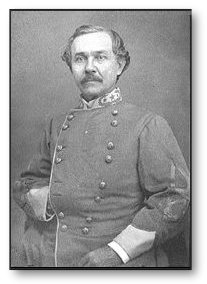

|
Brigadier-General Joseph
Reid Anderson was born in 1813 in Botetourt County, Virginia.
He was a
graduate of the United States military academy, class of 1836.
He was appointed to a lieutenancy in the Third artillery. He
served for a time as assistant engineer in the engineer bureau
at Washington, and on July 1, 1837, was transferred to the
corps of engineers as brevet second lieutenant.
In this line of duty he assisted in the building of Fort
Pulaski, at the entrance of the Savannah river. He resigned
his commission September 30, 1837, to accept the position of
assistant engineer of the State of Virginia; was chief
engineer of the Valley turnpike company, 1838-41, and
subsequently, until the outbreak of war, was head of the firm
of Joseph R. Anderson &
Co., proprietors of the Tredegar iron
works and cannon foundry at Richmond.
Entering the Confederate army, he was commissioned brigadier- general in
September, 1861, and was assigned to command of the Confederate forces at
Wilmington, NC. Early in the spring of 1862, he was called to Virginia,
and on April 25, 1862, he was ordered with his brigade to the vicinity of
Fredericksburg, where General Field was then stationed, and instructed by
General Lee to assume command in that quarter, attack the enemy or confine his
field of operations. |
 |
|
Fredericksburg was occupied by McDowell's Federal troops, and
Anderson commanded the Confederate force confronting
him
during the Peninsula operations under Johnston. He was then
assigned to a new division formed under A. P. Hill, and in
command of the Third brigade of Hill's light infantry, he
participated in the battles of Mechanicsville, Gaines' Mill
and Frayser's Farm. In the latter he was particularly distinguished in the gallant
action of his Georgia brigade, and was seriously wounded. He
resigned July 19, 1862.
His second wife was Mary Evans Pegram, making
him a brother-in-law to both General John Pegram and Colonel William Ransom Johnson
Pegram.
Subsequently he gave his attention to the management of the
Tredegar iron works. His death occurred at the Isle of
Shoals, N. H., September 7, 1892.
Source: Confederate Military History, vol. IV, p. 575
|